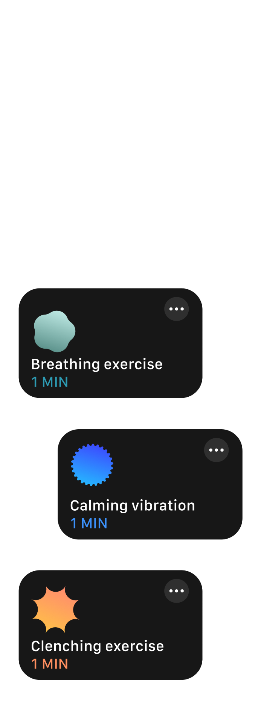
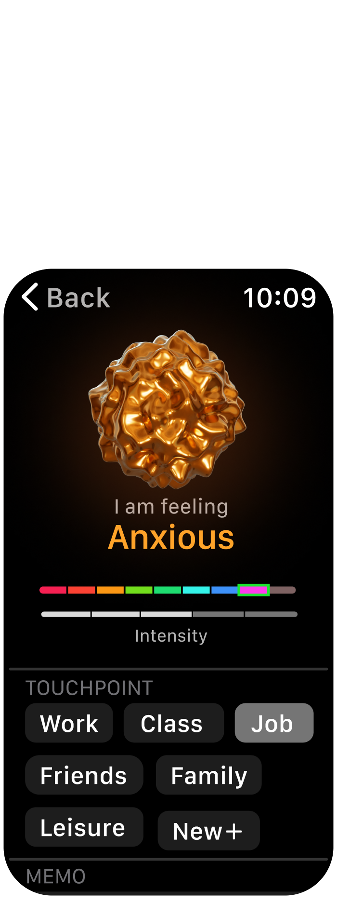
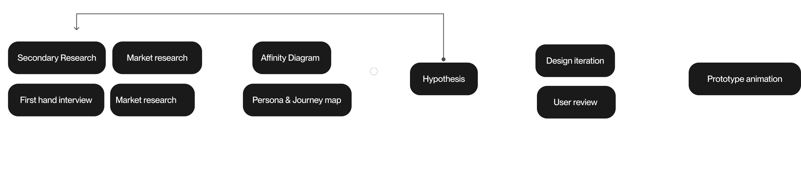

Mood.orb is a self-initiated project inspired by an interactive installation course and a data visualization session. It aims to create an engaging interactive mood journal by using your physiological signals to generate unique visual patterns, making mood journaling both intuitive and enjoyable.
Moof journal users
6 weeks initial iteration and research
3 weeks second iteration
Figma
After Effect
Blender
Illustrator
Research
Design system
Motion graphic
0 to 1 app design

Solutions backed up by research and psychology studies.

/01
Unlike manual entry, Mood.orb senses mood changes using physiological data, enabling timely entries for the user.

/02
If a user enters a negative mood, the app directs them to an activity page with active practices like breathing and clenching exercises or passive practices like vibration frequencies matching heart rate variability.
/03
The Digital Crown integrates with the mood selection page, enabling users to make quick and easy entries.


/04
With data visualization, users can easily see the patterns between their physiological signals and their moods.


Given an opportunity in a class where students have to collect their own data, I made my own mood visualization and realize this isn’t an easy feat.
From secondary resources, I gather more insights on what user want in a app, and the pro & con of different existing app resources.
I also talked to several friends who does mood management and whom studies psychology on their opinion,
I gathered opinions from various sources during my research and compiled them into an affinity diagram to identify commonalities. Commonly mentioned pain points include timely entry and accurate mood representation.


Comparing the overall user experience with a mood journal, it’s clear that users place significant importance on the “Before” and “After” aspects. Many existing mood journals overlook these:
Before: The user’s initial experience, incentives, and motivation to start using the mood journal.
After: The user’s feelings immediately after using the journal and their wishes for improvements.

Inspired by a prototyping class, I explored the potential of sensors. While most mood journal apps use time-based reminders, time alone isn't a precise indicator for entries. Therefore, I conducted research focusing on: 1) Reducing the effort required for entry creation, and 2) Implementing low-touch interventions that can provide immediate mood improvement.
Question 1 : Can the mood logging experience be transformed from an active task into a passive one by utilizing physiological signals?
Question 2: Are there low-effort micro practices that can effectively alleviate stress and anxiety?

For question 1 : Yes, physiological traits can indicate mood changes. Skin conductance, heart rate, and heart rate variability (HRV) all provide valuable insights into emotional states.
For question 2: Micro practices that can help cope with negative moods include breathing exercises, HRV vibration, and fist clenching exercises.
Most digital mood journals are mobile apps that require active logging in and out, which can be cumbersome. To address this, we could explore a different approach. Considering low-touch and sensing capabilities, an Apple Watch would be highly suitable.


Story board for 2 flows. 1: How our mood journal would react when the user is in a bad mood. 2. How our mood journal provides timely micro intervention for the user.


Mood.orb actually means a lot to me, since it being my first 0 to 1 UX project, transitioning a familar concept-mood.orb into reality.
The finishing product here is actually Mood.orb 2.0. I wasn't really satified with the result I got for the first time, but with my friends and interviewee, and mentors help. I am able to rework it completely with feed backs. The second iteration take more time, but its worth it.